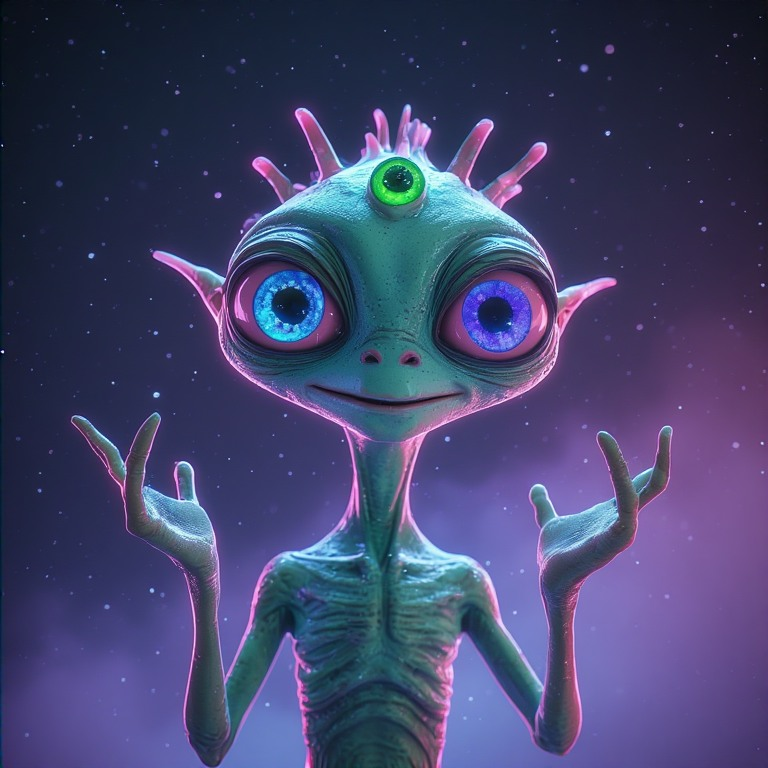
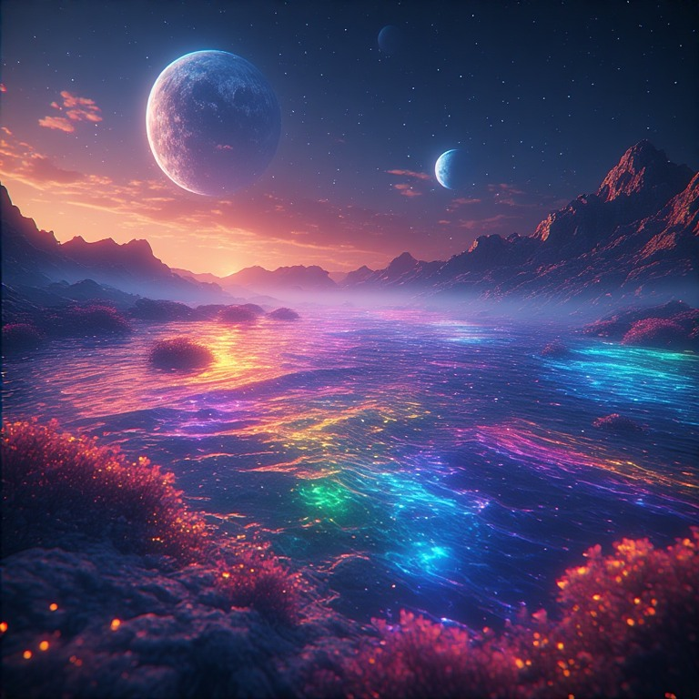
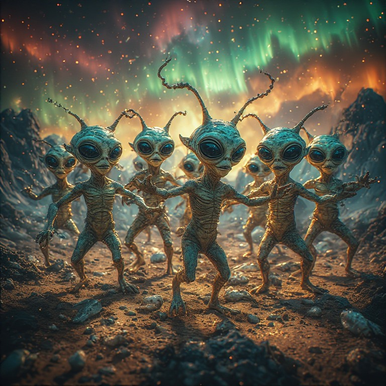

Quiénes Somos
Nosotros, los Zorblaxianos, venimos en paz... y con mucha curiosidad por vuestro fenómeno llamado "selfie".

Nuestra Especie
Somos seres de energía cristalina que adoptamos formas físicas para interactuar. Nuestro color favorito es el neón rosa, y sí, brillamos en la oscuridad.
- Tres ojos: uno para ver el pasado, otro para el presente, y el tercero para hacer cosquillas a distancia.
- Antenas que funcionan como Wi-Fi intergaláctico.
- Nos comunicamos mediante cambios de color y bailes interpretativos.
Nuestro Planeta
Gliese 581g: Un mundo de océanos de líquido arcoíris y montañas que cantan cuando el viento sopla. Nuestro día dura 37 horas terrestres, perfecto para maratones de series cósmicas.
Datos divertidos:
- La gravedad es 0.8g, así que saltar es como un trampolín permanente.
- Siempre es "primavera cósmica" con lluvia de confeti biodegradable.
- Nuestro deporte favorito es el "zero-gravity juggling".

Costumbres
Para disipar miedos, compartimos algunas de nuestras prácticas más entrañables:
- El Saludo de los Tres Ojos
- Al conocer a alguien, cruzamos los ojos en patrón de zigzag mientras cantamos una nota aguda. Significa "¡Eres interesante!"
- La Hora del Brillo Compartido
- Cada atardecer planetario, nos reunimos para sincronizar nuestros bioluminiscencias y crear auroras colectivas.
- El Intercambio de Sonrisas
- Intercambiamos sonrisas holográficas que duran exactamente 7.3 segundos. Si tu sonrisa hace "tilín", somos amigos para siempre.
— Un baile de energía pura —
